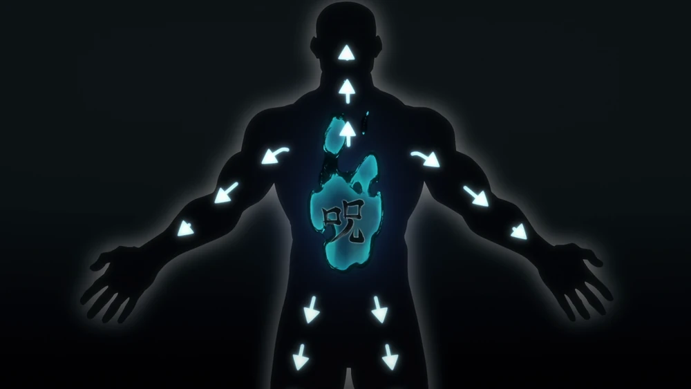
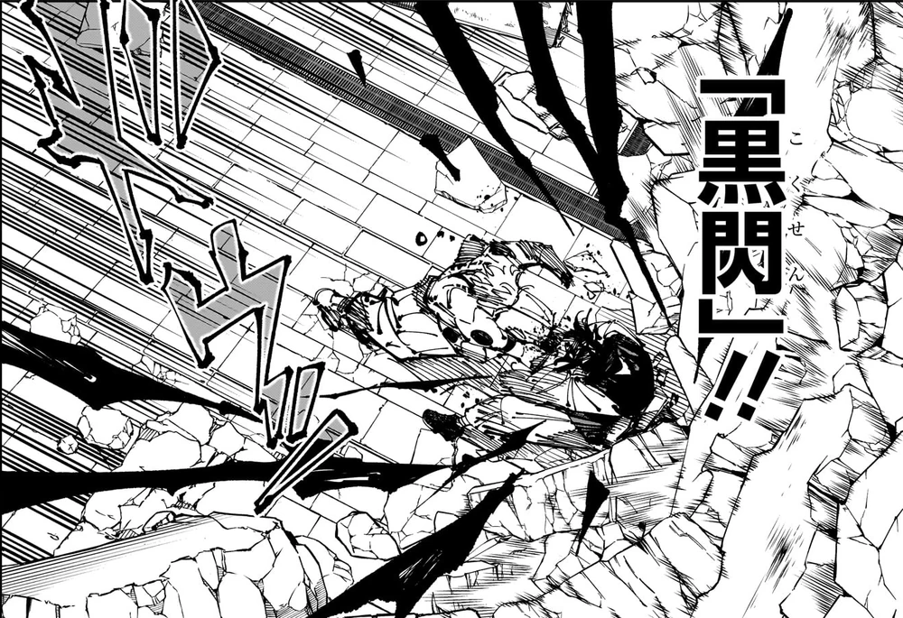
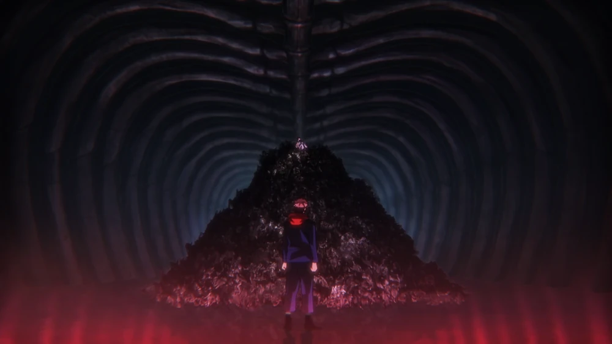
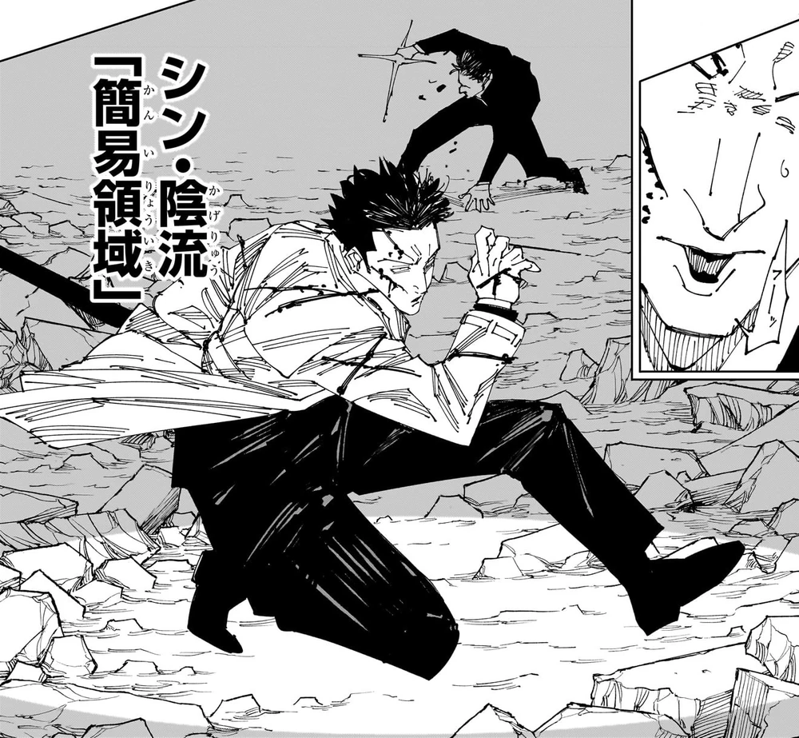
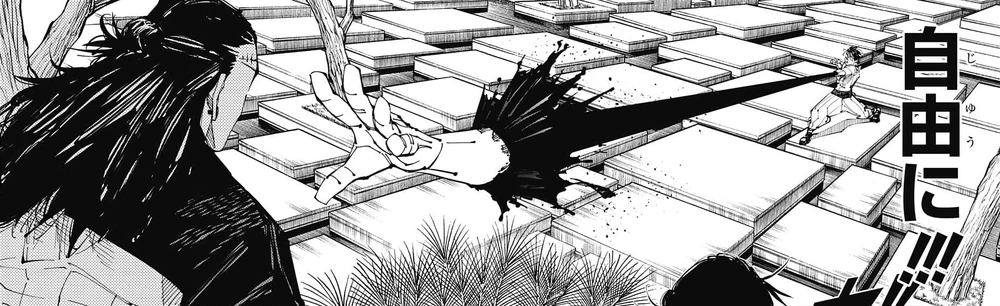

Conceptos Clave del Jujutsu
El universo de Jujutsu Kaisen se rige por un complejo sistema de poder basado en la Energía Maldita. A continuación, se describen los pilares fundamentales que todo hechicero y maldición utilizan en sus combates.
Energía Maldita
La Energía Maldita (Juryoku) es la fuente de poder fundamental en el universo de Jujutsu Kaisen. Nace de las emociones negativas de los seres humanos, como el miedo, el odio y la desesperación. Mientras que las personas normales la liberan inconscientemente, dando lugar a las Maldiciones, los Hechiceros de Jujutsu han aprendido a controlarla y utilizarla como arma.
Esta energía se origina en el estómago y fluye por todo el cuerpo, de forma similar a la sangre. El control sobre este flujo es lo que diferencia a un hechicero novato de uno experto. En el caso de Yuji Itadori, a pesar de su inmensa capacidad atlética, no tenía control inicial sobre ella. Fue Satoru Gojo quien le enseñó a mantener un flujo constante de energía haciéndole ver películas con un muñeco maldito que lo golpeaba si su emoción fluctuaba, estableciendo así la base para todas sus futuras habilidades de jujutsu.
Técnicas Malditas (Técnicas Rituales)
Una Técnica Maldita Innata o Ritual (Jutsushiki) es una habilidad sobrenatural única que está grabada en el cerebro de un hechicero desde su nacimiento. A diferencia de las aplicaciones generales de la energía maldita (como reforzar el cuerpo), una técnica innata es un poder específico y personal que define el estilo de lucha de un hechicero.
La naturaleza de la técnica está determinada en un 80% por la genética, motivo por el cual las habilidades más poderosas y codiciadas, como el "Ilimitado" de la familia Gojo o las "Diez Sombras" de la familia Zen'in (heredada por Megumi), se heredan dentro de los grandes clanes. Un hechicero nace con una sola técnica innata y no puede cambiarla. La única excepción conocida es Yuta Okkotsu, cuya técnica "Copiar" le permite replicar otras habilidades. Por otro lado, Yuji Itadori es un caso único, ya que ha comenzado a manifestar técnicas relacionadas con la Manipulación de Sangre de sus "hermanos" (las Pinturas de la Muerte) y el "Santuario Malévolo" de Sukuna debido a su naturaleza como recipiente.

Técnica de Maldición Inversa (Rituales Inversos)
La Técnica de Maldición Inversa es una aplicación extremadamente compleja y rara de la energía maldita. Consiste en tomar dos fuentes de energía maldita (energía negativa) y multiplicarlas entre sí para crear energía positiva. Esta energía positiva, al ser lo opuesto a la energía maldita, tiene propiedades curativas y es la única forma de reponer tejido corporal perdido.
Muy pocos hechiceros dominan esta habilidad, y aún menos pueden emitirla para curar a otros. Los usuarios más notables son:
- Satoru Gojo: La usa para mantener su cerebro fresco y su técnica "Ilimitado" activa constantemente, además de para curarse y potenciar su técnica "Rojo".
- Ryomen Sukuna: Un maestro en su uso, capaz de regenerar extremidades y órganos vitales en segundos.
- Yuta Okkotsu: Puede curarse a sí mismo y es uno de los pocos que puede aplicarla para sanar a otros.
- Shoko Ieiri: La doctora de la Preparatoria de Jujutsu. Su talento principal es el uso de la técnica inversa para curar a los demás hechiceros.
- Kinji Hakari: Durante el "premio gordo" de su Expansión de Dominio, su cuerpo se cura de forma automática e inconsciente, volviéndolo inmortal por 4 minutos y 11 segundos.
Destello Negro (Black Flash)
El Destello Negro no es una técnica, sino un fenómeno que ocurre cuando un hechicero aplica su energía maldita a un golpe físico en el lapso de 0.000001 segundos después del impacto. Cuando se logra, el espacio se distorsiona y la energía maldita destella en color negro, amplificando el poder del ataque a la potencia de 2.5.
Lograr un Destello Negro sumerge al hechicero en un estado de concentración extrema, similar a la "zona" de un atleta. En este estado, el control sobre la energía maldita se vuelve tan natural como respirar. Ningún hechicero, ni siquiera Satoru Gojo, puede usarlo a voluntad, pero la experiencia de lograrlo una vez facilita enormemente su comprensión del jujutsu.
Expansión de Dominio
La Expansión de Dominio (Ryōiki Tenkai) es considerada la técnica cumbre de un hechicero. Consiste en usar una inmensa cantidad de energía maldita para materializar el "Dominio Innato" del usuario en el mundo real, atrapando al objetivo dentro de una barrera. Dentro de este espacio, la técnica innata del hechicero se amplifica y, lo más importante, sus ataques adquieren un efecto de "golpe seguro", lo que significa que no pueden ser esquivados.
La barrera actúa como la "cáscara" del dominio; es muy resistente desde el exterior, pero más débil desde el interior. Sin embargo, no todos los dominios son letales. Algunos, como el "Sentencia Mortal" de Hiromi Higuruma, imponen reglas en lugar de ataques. En su dominio, Higuruma fuerza a su oponente a un juicio donde se prohíbe la violencia, y el resultado puede llevar a la confiscación de la técnica del acusado, demostrando la increíble versatilidad de esta habilidad.

Votos Vinculantes
Un Voto Vinculante es un pacto creado con energía maldita que un hechicero puede hacer consigo mismo o con otros. Se basa en el principio de "dar y recibir". Al imponerse una restricción, el hechicero obtiene un aumento de poder a cambio. Por ejemplo, Nanami restringía su poder durante sus "horas de trabajo" para liberarlo con más fuerza en "tiempo extra". Otro ejemplo es revelar el funcionamiento de la propia técnica a un oponente, lo que aumenta drásticamente su efectividad. Romper un voto tiene consecuencias graves y, a menudo, fatales.
Los Votos Vinculantes también pueden alterar drásticamente una Expansión de Dominio. Por ejemplo, Satoru Gojo puede crear un dominio diminuto que dura solo 0.2 segundos, un voto que limita el tamaño y el tiempo para minimizar el daño a los inocentes. El caso más extremo es el de Sukuna, quien crea un voto al no cerrar la barrera de su dominio. Al proporcionar una "ruta de escape", el poder de su ataque de golpe seguro se amplifica a un rango masivo de casi 200 metros.
Dominio Innato
El Dominio Innato es el paisaje mental y espiritual que existe dentro de cada hechicero, una manifestación metafísica de su propia alma y psique. No debe confundirse con el alma misma; si el alma es la esencia que define la forma del cuerpo, el Dominio Innato es el "mundo interior" que esa alma habita.
Este dominio es la plantilla para una Expansión de Dominio. Cuando un hechicero activa su expansión, lo que hace es proyectar este paisaje interno en la realidad. Su apariencia refleja la naturaleza del hechicero (el volcán de Jogo, el santuario de Sukuna). Es en este plano mental donde Yuji Itadori puede comunicarse directamente con Sukuna.
Dominio Simple
Para entender la importancia del Dominio Simple, primero hay que entender las "peleas de dominios". Cuando dos Expansiones de Dominio chocan, la más refinada y poderosa dominará a la otra. Para los hechiceros que no poseen una Expansión de Dominio, enfrentarse a una es una sentencia de muerte casi segura. Aquí es donde entra el Dominio Simple.
Considerada una "técnica para los débiles", es en realidad una habilidad de barrera anti-dominios increíblemente sofisticada. Al activarse, crea una pequeña barrera alrededor del usuario que neutraliza el efecto de "golpe seguro" de cualquier dominio en el que se encuentre. Aunque no puede ganar una pelea de dominios, permite sobrevivir y contraatacar. Su dominio es tan difícil que muy pocos lo logran a la perfección. El mayor experto conocido es Atsuya Kusakabe, un hechicero de Grado 1 que, sin tener una técnica innata propia, ha alcanzado su rango gracias a su maestría sin igual del Dominio Simple. Otros usuarios notables son Aoi Todo y Miwa Kasumi.
Recientemente, Yuji Itadori aprendió esta técnica de Kusakabe y la utilizó dentro del "Santuario Malévolo" de Sukuna para reducir el daño de los cortes y proteger a Higuruma. Aunque Gojo puede usarlo, en su batalla contra Sukuna empleó una técnica anti-dominios aún más refinada, la "Emoción de la Flor Caída", un arte secreto de los tres grandes clanes.
Técnicas de Sangre (Manipulación de Sangre)
La Manipulación de Sangre es la técnica innata heredada del clan Kamo, una de las tres grandes familias de hechiceros. Permite al usuario controlar su propia sangre una vez que está fuera de su cuerpo, manipulando su forma, densidad y trayectoria con una precisión letal. Pueden crear proyectiles, redes o incluso reforzar su propio cuerpo.
Los usuarios más notables son Noritoshi Kamo y Choso. Mientras que un hechicero humano debe gestionar la pérdida de sangre para no morir, Choso, al ser una Pintura de la Muerte, puede convertir su energía maldita en sangre, lo que le otorga un suministro casi ilimitado. Sus ataques más conocidos son "Sangre Perforante", un rayo de sangre a alta presión, y "Supernova", una explosión de perdigones de sangre.
La relación entre esta técnica y Yuji Itadori es compleja y se debe a Kenjaku. Al ser el creador de las Pinturas de la Muerte (como Choso) y también la "madre" de Yuji (al poseer el cuerpo de Kaori Itadori), existe un lazo de sangre directo entre ellos. Esta es la razón por la que Choso percibe a Yuji como su hermano y por la que Yuji ha comenzado a desarrollar sus propias habilidades de manipulación de sangre, como la capacidad de escupir sangre con propiedades explosivas.
Restricción Celestial (Restricciones Divinas)
La Restricción Celestial es un tipo de Voto Vinculante impuesto en el cuerpo de una persona al nacer. Funciona bajo el principio de "dar y recibir": el cuerpo sacrifica algo para ganar una ventaja en otra área. La forma más conocida es el intercambio de energía maldita por proezas físicas sobrehumanas.
Los ejemplos más extremos son Toji Fushiguro y Maki Zen'in. Toji nació sin absolutamente nada de energía maldita, y a cambio, su cuerpo fue llevado al límite de la perfección física. Maki nació con muy poca energía, pero su restricción estaba incompleta debido a la existencia de su hermana gemela, Mai. Tras el sacrificio de Mai, la restricción de Maki se completó, poniéndola al mismo nivel que Toji.
Una de sus mayores ventajas es la inmunidad a las Expansiones de Dominio. Dado que el efecto de "golpe seguro" de un dominio apunta a entidades con energía maldita, aquellos con cero energía, como Maki y Toji, son tratados como objetos inanimados (como un edificio) y no son un objetivo válido. Esto se demostró claramente cuando Maki pudo moverse libremente dentro del dominio de Naoya Zen'in sin ser afectada.

Herramientas Malditas
Las Herramientas Malditas son armas imbuidas con energía maldita. Esto permite que incluso los no hechiceros puedan dañar a las maldiciones. Para los hechiceros, son extensiones de su poder. Algunas de las más poderosas, conocidas como de Grado Especial, poseen sus propias técnicas.
- Lanza Invertida del Cielo: Utilizada por Toji, esta daga tiene el poder de anular forzosamente cualquier técnica maldita al contacto.
- Katana del Alma Dividida: Una espada que perteneció a Toji y ahora usa Maki. Ignora la dureza física y ataca directamente el alma del objetivo.
- Anillo de Yuta Okkotsu: Un caso único donde el anillo actúa como un catalizador y contenedor para la inmensa energía de Rika, permitiéndole a Yuta manifestarla y usar su técnica de "Copiar".